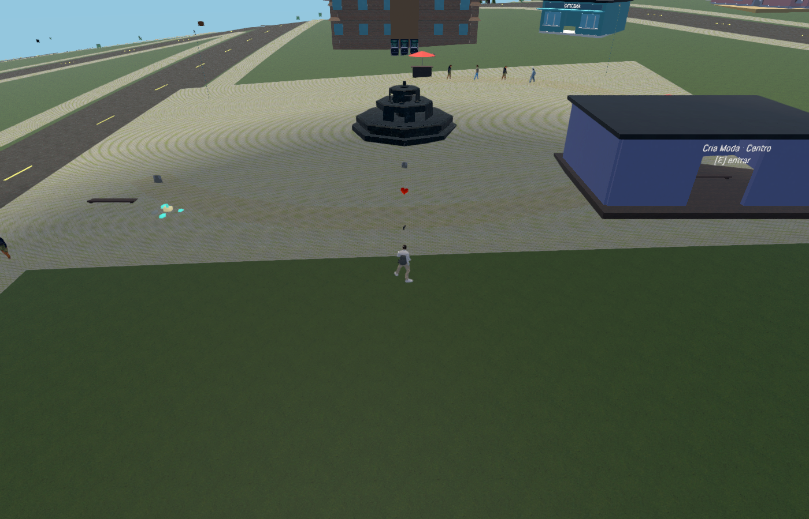

Captura real do executável Windows. O teste contou 140 pedestres próximos em quatro regiões e 140 para cada um dos dois observadores separados. Eles são distribuídos ao redor, não todos dentro do enquadramento. O segundo observador é uma fixture de host, sem sessão multiplayer ao vivo.

275 verificações nativas aprovadas.